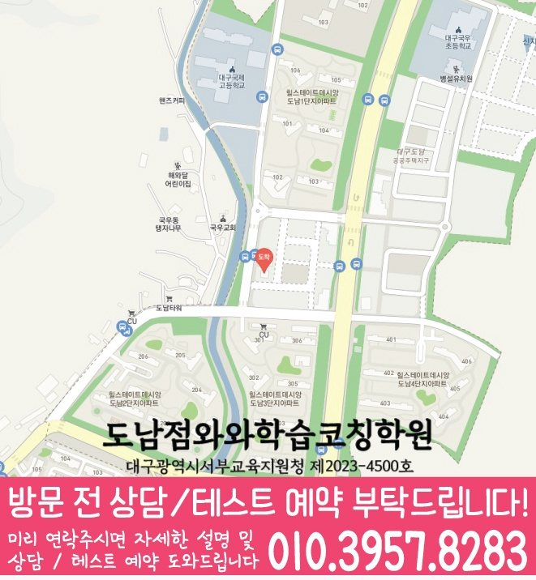

어휘와 구문을 구분
모르는 단어와 구조가 복잡해 해석하지 못한 문장을 각각 표시하세요. 핵심 서술어와 연결 관계를 찾고 문장 뜻을 다시 설명해 봅니다.
공부 방법
국우동 학생을 위한 고등 영어 공부 안내입니다. 구문·독해·서술형 오답 중심으로 어려운 부분과 다음 복습을 정리해 보세요. 와와학습코칭학원 대구도남점의 수강 학년과 과목별 조건은 지점 안내에서 확인할 수 있습니다.
모르는 단어와 구조가 복잡해 해석하지 못한 문장을 각각 표시하세요. 핵심 서술어와 연결 관계를 찾고 문장 뜻을 다시 설명해 봅니다.
주제·빈칸·순서 등 문항에서 답을 고른 근거를 지문에 남기세요. 글에 없는 추측이나 표현을 지나치게 넓게 해석한 부분이 있는지 확인합니다.
학교 교재·유인물의 표현과 본인이 쓴 답안을 함께 보세요. 어법·어휘 형태·내용 누락을 구분하고 수정한 답을 혼자 다시 작성해 봅니다.
| 살펴볼 기록 | 다음 공부 | 확인할 내용 |
|---|---|---|
| 긴 문장의 의미가 불분명 | 서술어와 연결 관계 표시 | 문장 구조와 뜻 설명 |
| 선택지 판단에서 오류 | 지문 근거와 선택지 비교 | 답을 고른 이유를 문장으로 기록 |
| 서술형에서 반복 감점 | 어법·형태·내용 누락 분류 | 수정 답안을 혼자 재작성 |
학생이 스스로 공부를 정리하기 위한 일반적인 방법입니다. 지점의 실제 수업·평가·숙제 운영을 뜻하지 않습니다.
국우동에서 고등 영어 공부를 준비한다면 학교 교과서·유인물과 최근 답안을 함께 정리해 보세요. 어려운 단어·문장과 답을 고른 근거를 표시합니다.
학교명은 제공된 지역 자료의 참고 목록입니다. 학교 전담반·제휴·모든 학교의 내신 지도를 의미하지 않습니다.
대구 북구 도남중앙로7길 20-3 위너프라자 402호 와와학습코칭학원
고등 영어 안내: 고1~고3
와와학습코칭학원 대구도남점의 고등 영어 기본 안내 학년은 고1~고3입니다. 현재 수강 가능 여부와 시간표는 상담에서 확인해 주세요.
과목별 예외 조건과 현재 개설 여부는 국우동 고등 영어 수강 조건에서 먼저 확인해 주세요.
어휘를 몰랐는지, 문장 구조를 해석하지 못했는지, 지문을 이해했지만 선택지의 근거를 잘못 판단했는지 나누어 보세요. 정답 해설만 읽기보다 본인이 답을 고른 근거와 지문의 근거를 비교해 기록합니다.
맞힌 개수와 함께 혼자 설명한 내용, 도움 없이 다시 해결한 부분을 기록해 보세요. 같은 방식으로 모든 문제를 반복하기보다 아직 막히는 부분을 다음 복습으로 연결합니다.
공부 방법은 개념과 문제에서 무엇이 어려운지, 다음에 무엇을 복습할지 점검하는 안내입니다. 학습계획은 학교 일정과 실제 가능한 시간에 그 공부를 배치하고 실행 기록으로 분량을 조정하는 안내입니다.
와와학습코칭학원 대구도남점의 고등 영어 수강 안내에서 해당 학년과 과목별 조건, 위치를 확인할 수 있습니다. 현재 개설 여부와 시간표는 010-6839-8283으로 전화 또는 문자 상담해 주세요.


SAME LOCAL PAGE
국우동 지역의 과목별·학년별 페이지 23개를 목적별로 묶었습니다. 필요한 조합을 펼쳐서 바로 이동해보세요.
수업을 알아볼 때 함께 살펴보세요
진행 과정 기록 · 짧은 설명 녹여 쓰기 등 선생님이 소개하는 학습코칭 방식을 읽고 상담할 내용을 정리해 보세요.
교육정보
현재 과제와 어려운 부분을 정리하고, 이어서 상담할 질문을 준비해 보세요.
영어 서술형의 필수 내용과 제시어·문법·철자를 나누어 점검하고 다른 조건에서 쓰는 연습입니다.
전자기기의 사용 목적과 끝낼 조건을 정하고 강의·검색·필기 뒤 독립 수행을 확인하는 방법입니다.
기말고사 오답노트에 문항 위치와 첫 오류, 수정 행동, 재풀이 결과를 간결하게 남기는 방법입니다.
학년별 공부 커리큘럼
학습 중점과 연습 예시를 읽고, 학교 진도와 학생의 이해에 맞춰 다음 과제를 정해 보세요.
공부를 준비하는 참고 안내입니다. 실제 개설 과목·학년은 지점에 확인하세요.
고등영어 CONSULTING
고등 영어는 단어 암기만으로 해결되지 않기 때문에 구문 해석, 독해 속도, 내신 변형, 서술형 영작을 함께 관리해야 합니다.